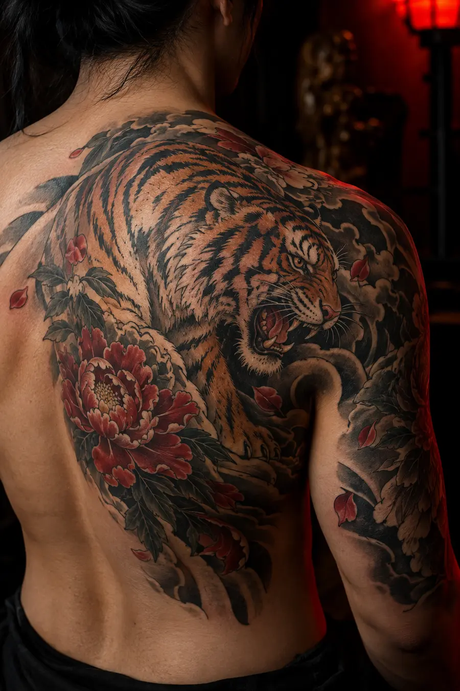
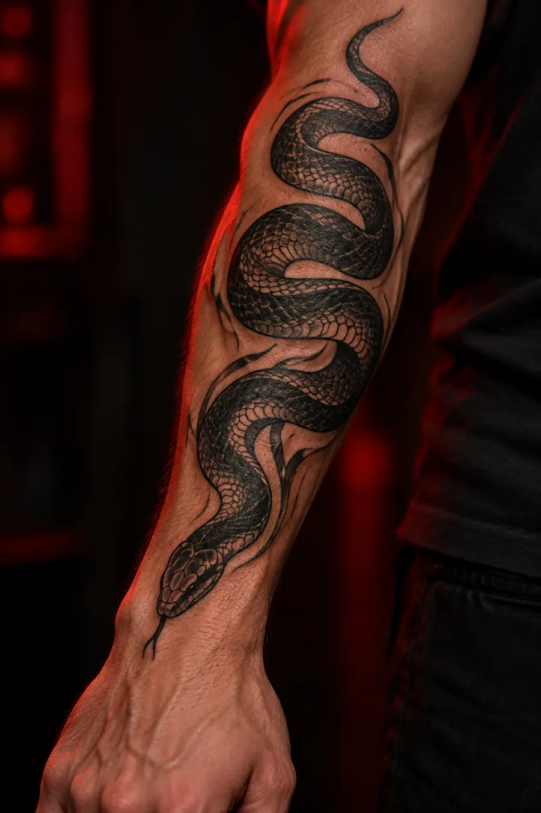
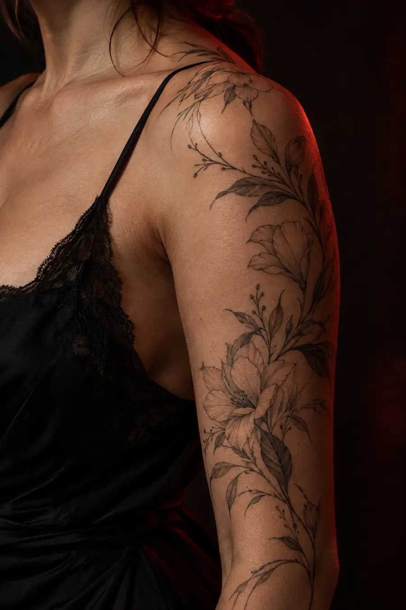
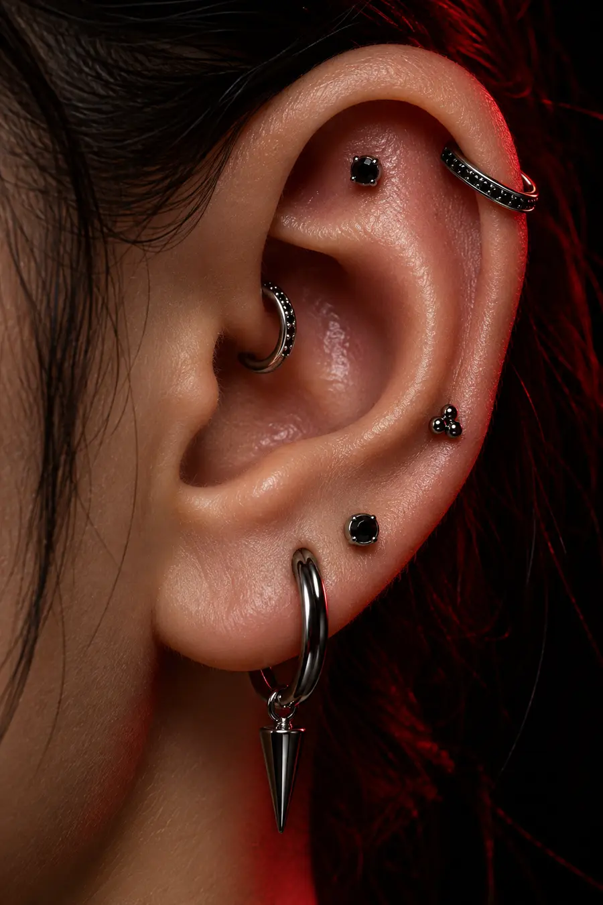
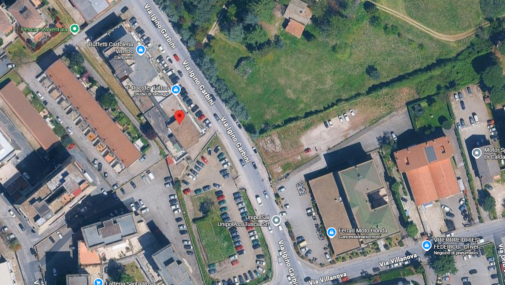

REALISTICO
Profondità, volumi e dettagli che rendono ogni soggetto vivo.
→TATTOO & PIERCING / VITERBO
Realistico, giapponese, tradizionale, fineline, blackwork e new school. Trasformiamo un’idea in un segno che parla di te.
NON SCEGLI SOLTANTO
UN DISEGNO.
Profondità, volumi e dettagli che rendono ogni soggetto vivo.
→Simboli, movimento e composizioni che seguono il corpo.
→Nero pieno, geometrie e contrasti per un segno deciso.
→Linee sottili, eleganza e precisione millimetrica.
→Icone senza tempo, contorni forti e colori essenziali.
→Anime, colore e immaginazione senza regole.
→Immagini dimostrative generate per il concept. Nel sito definitivo saranno sostituite con i lavori originali dello studio.




BODY MODIFICATION / CURATED EARConsulenza, anatomia, scelta del gioiello e cura: ogni piercing viene pensato per valorizzare la persona e rispettare il corpo.
Riferimenti, significato, stile e zona del corpo: partiamo da ciò che vuoi comunicare.
Disegno, proporzioni e posizionamento vengono studiati sulla tua anatomia.
Definiamo appuntamento, indicazioni preliminari e tutto ciò che serve.
Dopo la sessione ti accompagniamo nella cura e nella guarigione.
Scrivici descrivendo soggetto, dimensioni, zona del corpo e stile desiderato. Se hai immagini di riferimento, allegale al messaggio.
Sì. Il riferimento verrà reinterpretato e adattato al corpo per ottenere un progetto personale e tecnicamente efficace.
Riposa, mangia regolarmente, idratati ed evita alcol ed esposizione solare. Riceverai indicazioni specifiche prima dell’appuntamento.
I tempi variano in base a zona, dimensione e risposta individuale. Segui sempre le istruzioni ricevute dallo studio.
Sì. Contatta lo studio per conoscere disponibilità, tipologie di gioielli e valutare insieme il progetto.

Vista satellitare fornita per la demo · Google Maps
La vista dalla strada ti aiuta a orientarti una volta arrivato in Via Igino Garbini.
Il segnaposto riprende la posizione dello studio nella mappa fornita. Apri il navigatore per il percorso.